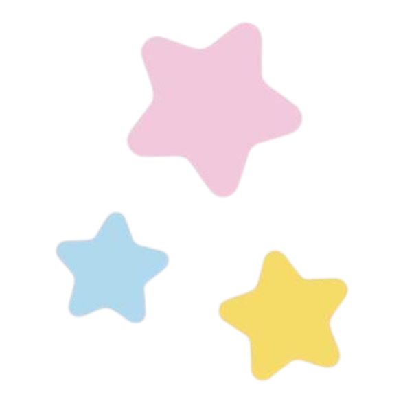
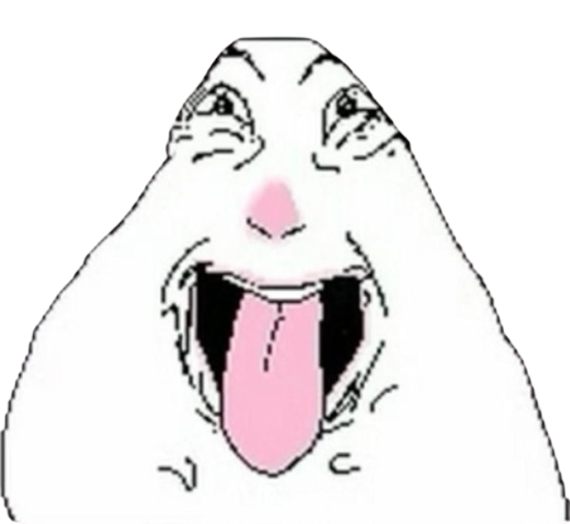

Have you ever wondered what happens when a Deathnote fan meets a Bleach fan? They form an Otome visual novel!

Hello! We are Avery and Freedom, the creators of this website!


Avery:
Hi!

Some of my favorite anime include Paranoia Agent, NGE, Deathnote, Code Geass, Lain, Sonny Boy, Devilman Crybaby, Hellsing, and Ergo Proxy! My favorite Deathnote characters are Misa Amane, Teru Mikami, Mello, and L!

My favorite things about Deathnote is the story line and the characters, since it's pretty rare to see characters with an intelligence level that's extremely high. Not only that, most of the characters wear such insanely good outfits that they're enough to make your jaw drop and break!
Another thing I like about deathnote is how the characters don't fight through weapons or magic, but they fight through wit and skill instead. I also like how unlike in most anime, the main character of Deathnote dies, and the symbolism portrayed is worth mentioning as it's both interesting and matches the gothic aesthetic of the show.
Freedom:
Hello! My name is Freedom, and Bleach is one of my favorite animes! I like 'em because of it's exciting storyline and world building.

I really like the developments of characters especially Ichigo. I really like them since their development feels real like it takes time and step by step like most people do. Overtime, Ichigo overcomes his survivor's guilt and depression after seeing and believing that it was his fault that his mom died protecting him.

My favorite characters are Orihime Inoue, Kisuke Urahara, and Sosuke Aizen. I really like Orihime since she's the one I resonate the most and of course... SAME BIRTHDAY ! For Kisuke, his intelligence, alongside with Aizen, impresses me and it makes me feel 3 things: jealous, impressed, and . He's also cool. For Aizen... I LOVE AIZEN. He's hot .